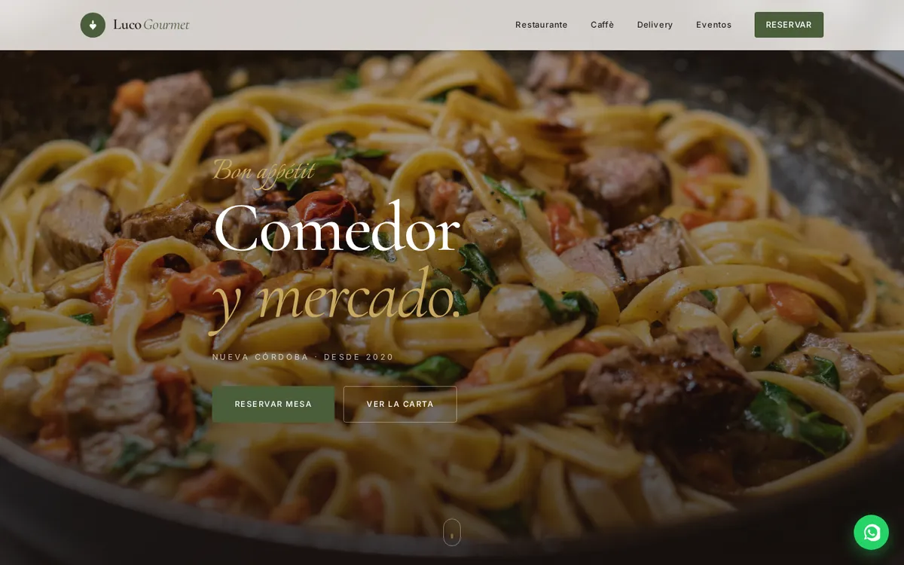
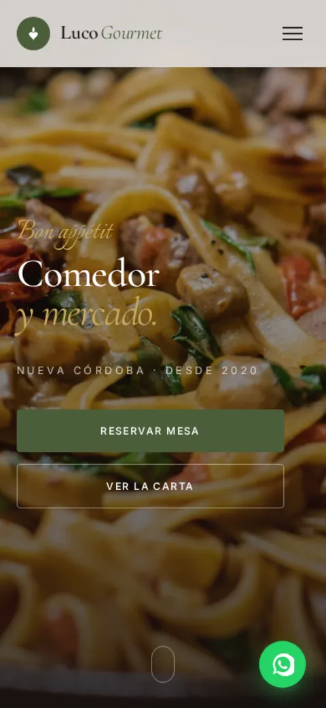
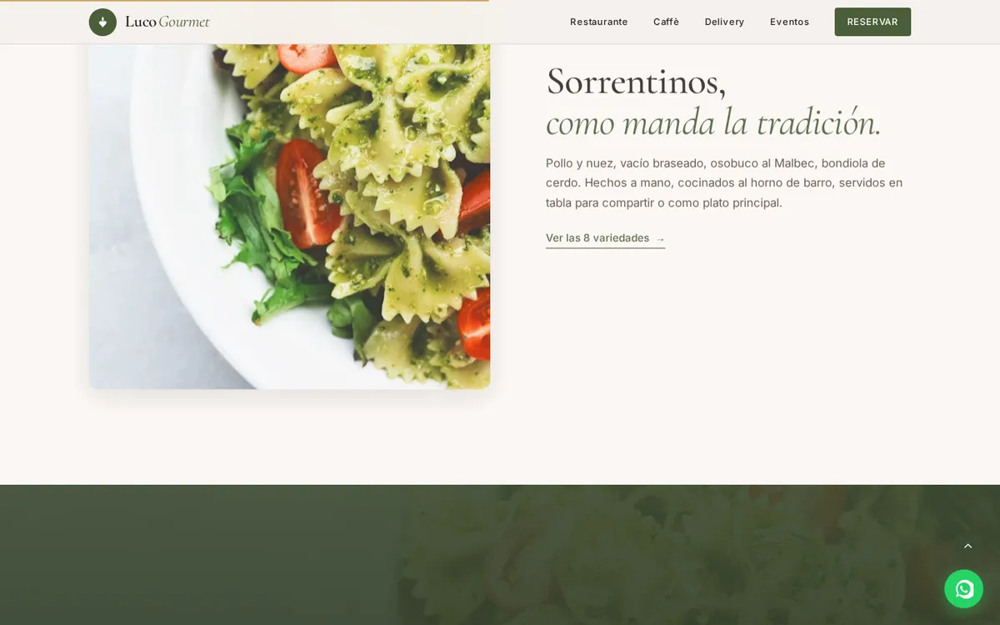

Luco Gourmet
Ver sitio en vivo
El proyecto
Proyecto de demostración: me propuse resolver el caso típico de un restaurante cuyo menú vive en una imagen o un PDF pesado — lento en móvil, imposible de indexar y frustrante con conexiones inestables en hora pico. Luco Gourmet es la marca ficticia que inventé para ese escenario: pasta artesanal, pizza al molde y vermut de bodegón.
La respuesta: una PWA instalable con menú offline, datos estructurados para Google y carga sub-segundo en 3G simulado (lab data).
Reto y respuesta
El problema
El escenario a resolver es conocido: sitios gastronómicos que tardan varios segundos en cargar en móvil, menús en JPG que se actualizan a mano y clientes que terminan pidiendo la carta por WhatsApp. El demo ataca cada uno de esos puntos con decisiones verificables en el sitio publicado.
La solución
Construcción desde cero con foco en rendimiento y PWA. Menú dinámico desde un archivo JSON versionado, datos estructurados Schema.org para restaurantes, Service Worker con estrategia offline-first para el menú e instalación nativa en la pantalla de inicio.
Decisiones técnicas
PWA completa
Service Worker con estrategia cache-first para CSS/JS e imágenes, y network-first con fallback offline para el menú JSON. manifest.json con iconos maskable. Aviso de instalación personalizado.
Schema.org para restaurantes
JSON-LD con Restaurant, OpeningHoursSpecification, Menu y GeoCoordinates. Marcado validado con el Test de Resultados Enriquecidos de Google.
Performance extrema
Critical CSS inlineado en <head>. Font preload para Inter 400/500. Imágenes en WebP con width/height explícitos. Total page weight <200KB. LCP <900ms en 3G lento simulado (Lighthouse, lab data).
Menú actualizable
Menú almacenado en menu.json versionado. Quien administre el sitio edita un archivo, hace push y Vercel redeploya en segundos. Sin CMS, sin suscripción mensual, sin interfaz que romper.
SEO local
Títulos y descripciones únicos por sección. Sitemap con prioridad diferenciada. Métricas de Lighthouse en verde (lab data).
Formulario de reservas
Formulario de contacto estático con validación HTML5 + JS custom, pensado para derivar consultas por email o WhatsApp sin backend propio ni costo adicional.
Stack
El sitio en pantalla



Resultado y aprendizaje
Resultado
El resultado es una PWA publicada en luco-gourmet-demo.vercel.app: instalable, con el menú disponible sin conexión y un peso total de página por debajo de 200 KB. Nada de esto depende de mi palabra — se puede auditar con DevTools sobre el demo.
- Lighthouse 99 en móvil (lab data)
- Peso total de página por debajo de 200 KB
- Menú offline vía Service Worker, instalable como app
Qué aprendí
Este proyecto me obligó a entender de verdad el ciclo de vida del Service Worker: qué estrategia de caché conviene por tipo de recurso y, sobre todo, cómo invalidar caché sin dejar usuarios atrapados en una versión vieja.
Hoy automatizaría el versionado del Service Worker en un paso de build (o usaría Workbox) en lugar de mantenerlo a mano, y agregaría un chequeo automático que falle si el peso de página supera el presupuesto de 200 KB.